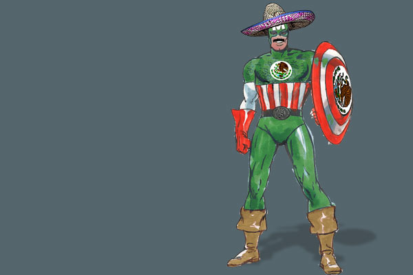
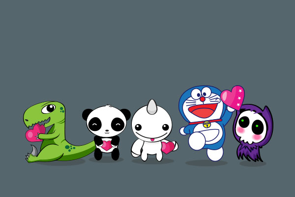
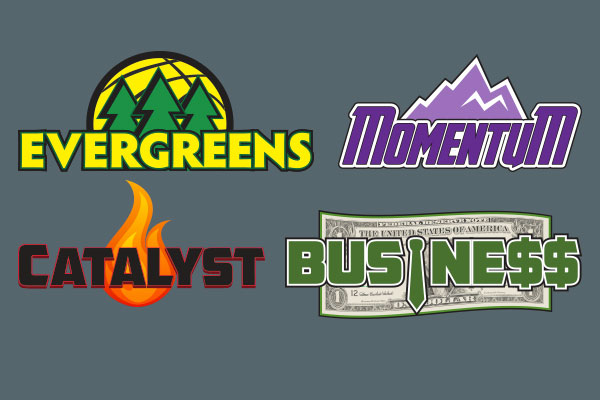
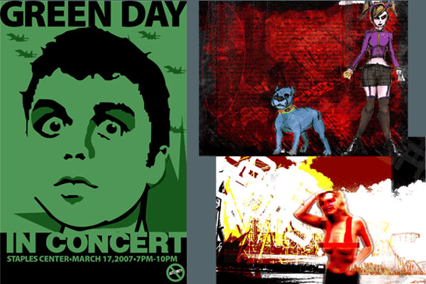
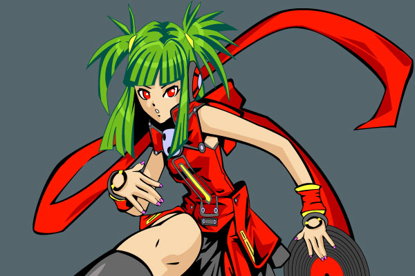
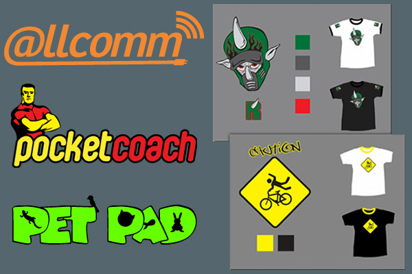
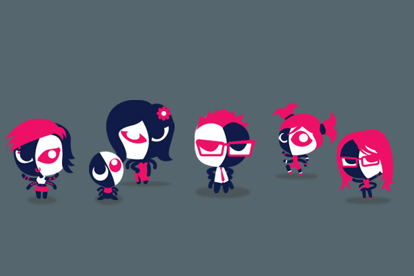
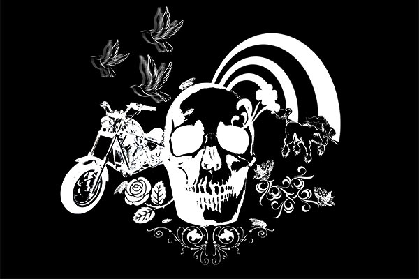

Stylus Presentation
CSS Pre-processors are amazing, and I had the honor and privelege to present Stylus to the HTML5 LA Developer's group
in Santa Monica. I followed an incredible presentation by Braden Roseborough, UI Engineer at Lynda.com, on Sass and
LESS. Over 170 attended, and I spoke about the benefits of using Stylus
over other pre-processors (I see it as the hipster of pre-processors. Everything else is just too mainstream). Checkout
the Meetup event page for more details, or download my deck below.
View PresentationPapercraft
I went through a papercraft phase a couple years back, printing out and building these little guys to my heart's content.
I had the most fun designing and crafting my own characters. Watch out for Milita Mouse, Unloved Imp, Evil Twin and others!
Go ahead and download a few of them, print them out and build your own friends!
Download PapercraftSHIFT
SHIFT is the real-time marketing platform for brands and agencies, enabling marketers to collaborate
and manage their social media campaigns. I worked on the HTML and CSS for the platform
and the Media Manager social advertising app, using the latest CSS3 technologies and techniques to create an exciting,
robust experience for one of the most up and coming start-ups in the United States today.
Visit Sitenexon.net
I handled front-end developer duties on nexon.net. Nexon is the industry leader in free to play massively
multiplayer online games, and this portal site enables users to sign up, manage their account, and charge
virtual currency. This sit is built using the Jade templating engine, LESS for stylesheets, and a custom
NodeJS build-script to put it all together.
Visit SiteNexon Projects
Whether it is a CMS-driven post page, content update teaser pages, a full site build, marketing campaign or
lightbox special events, I've worked in every facet of the web world at Nexon America. What started as Flash-heavy,
table-centered websites have turned into HTML5 experience for our users. I created naming conventions for use across
our entire portfolio, from image names to CSS style rules, and guidelines for efficient development and deployment.
Visit Github RepoFreelance
From corporate websites, restaurant social networks, to my own personal side projects, I enjoy
practicing my craft outside the office walls. I'm constantly trying to provide extra value to my clients,
such as delivering best-practices documentation and initiating post-launch project maintenance training sessions.
I love to frequent industry meet-ups and events, and am always looking for ways to contribute to the community and my profession.
Navy Field Branding Guide
A forthcoming addition to the Nexon game lineup, my team was entrusted with creating a brand and positioning guide for Navy Field 2.
We conducted user interviews, feedback sessions, with constant iteration and communication with stakeholders to produce a look for a
game that is unique, memorable, and easy to comprehend. My duties included project scoping, copywriting, and presentations to stakeholders.
Photography
Armed with my Sony a300 or smart-phone camera, you never know when a good shot is aching to be taken. I enjoy taking
pictures of street art, architecture, and nature, but hope to branch out to portraits and sports photography someday!
View InstagramIllustration








Sometimes one needs to get away from lines of code or step away from the conventional and just plain draw. I love the ease and fluidity of my Wacom tablet, and the ability to create colorful, captivating design and artwork. From corporate logos to overly cutesy doodles or grungy distressed style, the only limit is my imagination!
Voting Initiative
I was approached by a colleague to help her create a presentation for the office, imploring people to vote. What started as
a ho-hum powerpoint turned into a full scale presentation, complete with a take home brochure, snacks & refreshements, and a fog machine
(scratch that, no budget for the fog machine).
I lead and scoped the project, and created the graphics and copy for the presentation and brochure. Needless to say, I voted in 2012, and
I certainly hope I persuaded several of my coworkers to do the same!
Team Workshop
Always seeking to inspire and to be inspired by others, I ran a creative workshop at work amongst my design colleagues.
We brainstormed self-branding and personal logos/identities. After answering some questions about our goals and strengths,
people sketched out some ideas, and then we switched the answers among our peers, and had them create one for us! I enjoy facilitating
workshops filled with laughs aplenty and creativity abound.
Company Sports
At my office, I've organized intramural company sporting events. Sometimes we have awesome prizes, sometimes we do it for
the love of the sport. Basketball, table tennis, foosball; you get to see who's REALLY competitive among your peers! Whether it be setting
the teams and schedules, creating team logos, getting the word out through email or CEO presentations, the only thing that I enjoy doing more
than playing is setting the whole thing up!